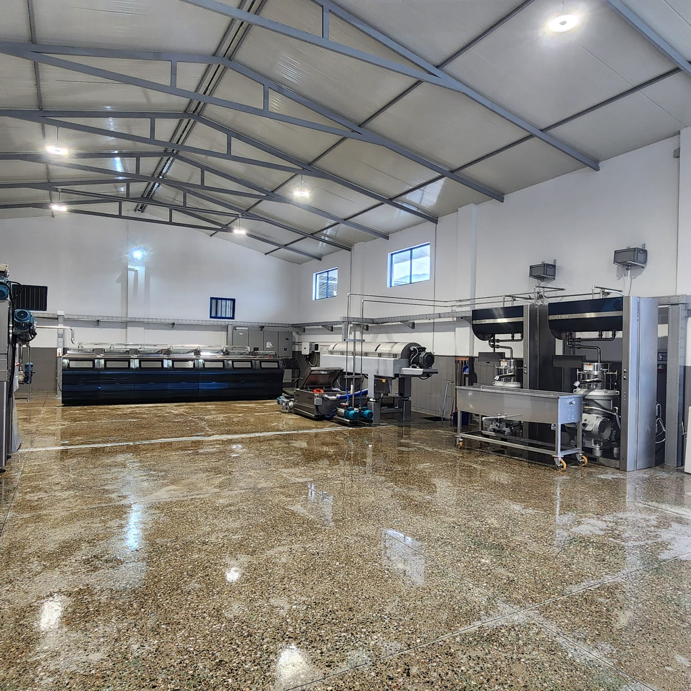
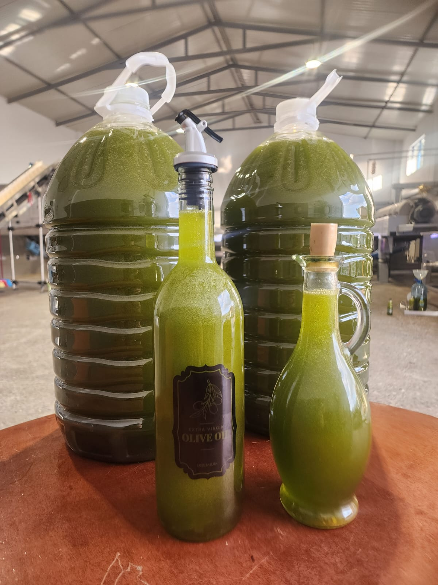

Nga ullishtet tona te tavolina juaj — cilësi premium, shije autentike dhe pastërti e garantuar në çdo pikë.

Keni ullinj nga ullishtja juaj? Ne i përpunojmë me linjën tonë moderne të shtypjes së ftohtë dhe ju merrni vajin tuaj — të pastër, të freskët dhe 100% tuajin.

Fabrika e Vajit Haka prodhon vaj ulliri ekstra të virgjër me pasion dhe përkushtim ndaj cilësisë. Ullinjtë mblidhen dhe përpunohen brenda ditës, duke ruajtur të gjitha vlerat ushqyese, aromën dhe shijen e pastër.
Me linjë moderne përpunimi dhe shtrydhje të ftohtë, garantojmë një vaj me aciditet të ulët, ngjyrë të gjelbër intensive dhe cilësi premium — ashtu siç e kërkon çdo kuzhinë.
Vaj ulliri ekstra i virgjër, i disponueshëm në disa formate — për shtëpi, dhuratë apo sasi të mëdha.
Për çmime dhe disponueshmëri, na kontaktoni direkt:
Vaji i ullirit ekstra i virgjër është një nga ushqimet më të vlerësuara në botë — dhe ne e prodhojmë me kujdesin që meriton.
I pasur me yndyrna të pangopura dhe polifenole që mbështesin shëndetin kardiovaskular.
Vitamina E dhe antioksidantë që ruhen falë shtrydhjes së ftohtë nën 27°C.
Cilësi ekstra e virgjër me aciditet të ulët — tregues i një vaji të pastër dhe të freskët.
Aromë e freskët e ullirit dhe shije e pasur që i jep jetë çdo gatimi.
Ndiqni rrugëtimin e vajit tonë — nga transporti i ullirit deri te produkti final. Klikoni çdo hap për ta parë videon të plotë.
Foto dhe video nga ambienti ynë dhe puna e përditshme. Klikoni për t'i parë të plota.
Nuk e gjeni përgjigjen? Na shkruani në WhatsApp — përgjigjemi shpejt.
Përpunimi (shtypja) e ullinjve kushton 1000 Lekë për çdo 100 kg. Sasia minimale për përpunim është 500 kg ullinj.
Po. Ju merrni saktësisht vajin e prodhuar nga ullinjtë tuaj — pa asnjë përzierje me vaj tjetër. Çdo klient përpunohet veç e veç.
Ullinjtë përpunohen me shtypje të ftohtë brenda ditës, në mënyrë që të ruhet freskia, aroma dhe cilësia e vajit tuaj.
Këshillojmë të rezervoni një termin duke na telefonuar ose shkruar në WhatsApp, që t'ju presim pa pritje dhe të organizojmë përpunimin sa më shpejt.
Porosia bëhet thjesht — na telefononi ose na shkruani në WhatsApp në numrin +355 67 377 6455. Ju ndihmojmë me sasinë dhe formatin që ju përshtatet.
E ofrojmë në shishe qelqi elegante 0.75L dhe 1L, në bidon familjar 5L, si dhe me shumicë për restorante, dyqane dhe biznese.
Po. Vaji ynë është ekstra i virgjër, i shtrydhur i ftohtë nën 27°C, pa aditivë dhe pa asnjë përzierje. Ullinjtë përpunohen brenda ditës për freski maksimale.
I ruajtur në vend të freskët, të errët dhe larg nxehtësisë, vaji ruan cilësinë deri në 18 muaj. Këshillohet të konsumohet brenda vitit të parë për shijen më të mirë.
Po, organizojmë dërgesa sipas sasisë dhe zonës. Na kontaktoni për të rënë dakord për detajet dhe kohën e dërgesës.
Porosia bëhet thjesht — na telefononi ose na shkruani në WhatsApp.